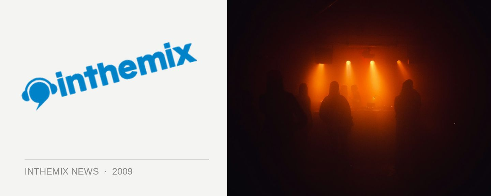

Sam Ronson coming for NYE
Brace yourselves for a heavy dose of faux celebrity, Sydney… Samantha Ronson, notorious LA DJ and ex-girlfriend of Lindsay Lohan, will be one of the headline performers for Sydney’s New Year’s Eve celebrations. Ronson will perform at SYD.NYE 09, which is an event being held at the Sydney Opera House.
“She will perform on the roof of the western colonnade which will be transformed into an outdoor oasis, complete with cabanas and plunge pools,” an event organiser told Sydney Morning Herald over the weekend.
When it comes to Ronson’s hugely publicized relationship with Lindsay Lohan, there’s been a lot of water under the bridge since her last visit to Australia in September 2008. She’s gone from publicly declaring her love on Myspace to some very public spats on Twitter, with Lohan accusing her of being a hypocrite, a cheater and a drug user, amongst other things.
Here at ITM, we reckon it’s just exactly what Sydney needs to help bring the city into 2010… A Los Angeles celebrity DJ! The Opera House event is the latest in a solid run of announcements of massive New Years Eve announcements, including Pacha at Ivy, Summanights at Home Nightclub and Shore Thing at Bondi Beach. If there’s anything to be gained with the news, one thing is crystal clear; we know where we won’t be spending our hard earned money on New Years Eve!